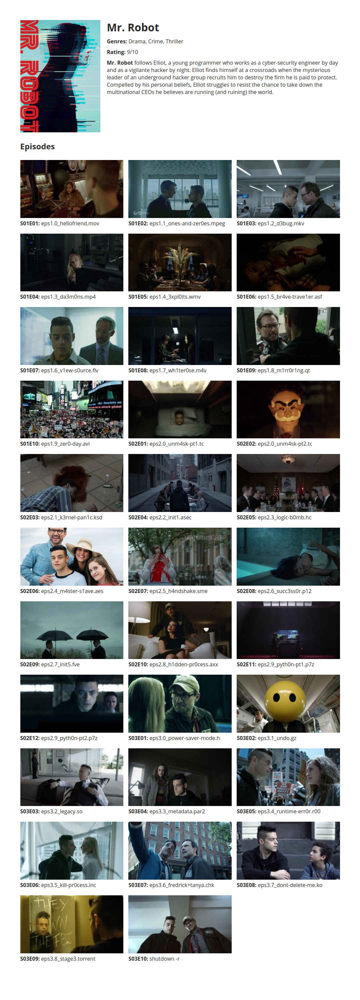

Front-end assignment
-
This document describes the requirements you need to fulfill. Read them thoroughly before getting to work!
Your task it to create a single page JavaScript application that renders an overview of the TV Series “Mr. Robot”. If you are not up-to-date with this TV series yet, and you would rather avoid spoilers, you can use “Black Mirror”, “Doctor Who”, “Vikings” or “Lost” instead.
Your application should render a single page that features the poster, title, genres, rating, description and episode list of the series, and looks somewhat like this:
 -
Your application must consist of at least 4 files:
- an HTML page called
index.htmlpage hereby provided for you, this file you must not edit, - a stylus style sheet called
index.styland its complied versionindex.csswhich is already loaded byindex.html(you can use this online stylus compiler to compile your stylus code), - a JavaScript file called
index.jswhich is already loaded byindex.html. The application should render inside the#application-rootelement in theindex.htmlfile.
- an HTML page called
-
Use Git and don’t be conservative with committing your changes. If you don’t want to make your work public, you can use a local Git project without a remote, or you can create a private repository on GitLab.
- The application has to work only in Google Chrome.
- All the data required for rendering the page can be loaded from the TVMaze API in
JSONformat. (You will have to edit the show name in the URL if you are working with another TV series). -
A few thigs to look out for:
- Use nice custom font face e.g. from Google Fonts.
- Use CSS flexbox as much as it makes sense.
- It is recommended that you use the The Fetch API to load the data from the TVMaze API.
- Use ES6, and try using as few variables and control structures as possible (but still prefer readable code to few variables and control structures).
- Make sure that the rating of the TV series is rounded to integers, and that season and episode numbers always take at least 2 digits (
S01E01instead ofS1E1).
Should you have any questions, please don’t hesitate to contact me at bence.toth@agillic.com.
Have fun!